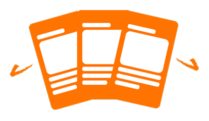
Voting SeasonSocial media swipe cards
Hook attention with short stories and direct calls to action.
A multi-channel starter kit that helps new immigrants understand why local elections matter, trust the information and take the next step.
This project responds to low participation in New Zealand local elections by designing a short, multi-channel starter kit for new immigrants. The kit combines social media swipe cards, a folded brochure and a voting information website. Each touchpoint has a different job: attract attention, explain the basics and guide people toward action.
The main design decision was to treat voting as a motivation problem before an information problem. If people cannot see why local elections affect daily life, people are unlikely to search for how to vote. I focused on turning civic information into a clearer story, then reducing the effort needed to continue.
Problem
Local government affects transport, housing, public spaces, libraries and community services. The issue was not that information did not exist. The issue was that information felt scattered, abstract and easy to ignore. Participation data showed a much sharper gap for recent migrants, so the project moved from a general turnout problem to a focused communication challenge.
Solution Strategy
The final strategy used a short, mid and long-term path. Social cards and a brochure support election-season outreach. The website gives people a central place to continue. A future settlement support portal was noted as a longer-term opportunity, but kept outside the final delivery scope.

Voting SeasonHook attention with short stories and direct calls to action.
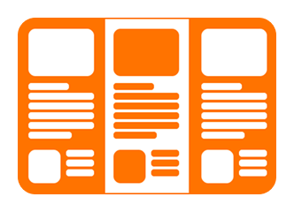
Start PointSupport family reading, community settings and offline sharing.
Centralise voting basics, process steps, support and official links.
Outcome
The final outcome was a multi-channel starter kit with refined principles, social cards, a folded brochure, responsive website screens and a future evaluation plan. I would not describe it as public impact yet. The next evidence should come from comprehension testing, engagement tracking and follow-up interviews.
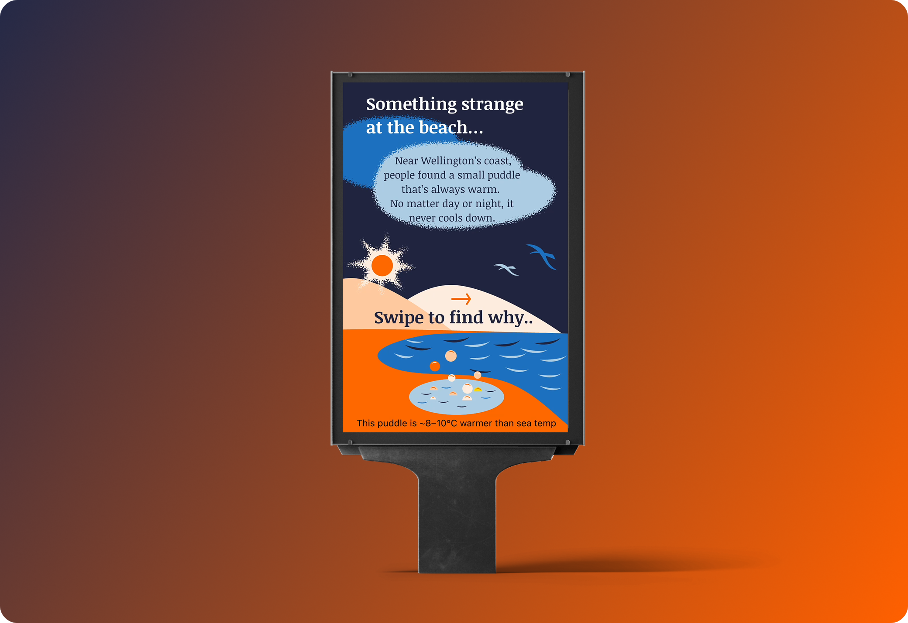
Course Feedback
The course feedback supported the main value of the project: a clear research-led structure, a tested multi-channel direction and visual communication that made local voting easier to discuss.
“Final design outcomes are rigorous and reflect a solid research and design process. The three media work together across the journey.”
“Accessibility considerations and implementation plans show care for diverse users.”
“Social card illustrations and colours are well chosen. The card narrative uses visual storytelling effectively.”
The following process explains how the team moved from civic participation evidence to a tested multi-channel starter kit. The work did not move in a perfect line, but each phase sharpened the relationship between motivation, trust and action.
Narrow the problem, audience and addressable design scope.
Turn research findings into communication principles.
Explore narrative styles and test trust cues.
Refine final touchpoints and future validation paths.
Scope and Findings
Early workshop mapping grouped barriers into outreach, understanding and action. Some barriers were system-level, such as voting logistics and access to candidate information. Those problems mattered, but they were too large for a six-week student project, so the project focused on education as the most practical lever.
Transport, housing, public spaces and libraries made the topic meaningful, but this link was not always visible.
ImplicationStart from daily life before asking people to care about voting procedures.
The data helped narrow the audience from everyone who does not vote to new immigrants and young families.
ImplicationDesign for confidence, relevance and first-step learning, not only for general awareness.
Users may notice election information, yet still avoid the next step when eligibility, value and process are unclear.
ImplicationUse a motivation-first journey before sending people into detailed information.
Research Synthesis and Principles
Interviews and research showed that interest was present, but the path from curiosity to action was weak. The principles worked as filters for deciding what to simplify, what to keep and which medium should carry each message.
Social content needed to be fast, visual and sequenced for scrolling behaviour, not written like a brochure.
Short text, icons and everyday examples helped reduce language and cognitive load.
Official links, clear data and neutral tone helped avoid the feeling of advertising.
Local policy was connected to daily life so voting felt less abstract.
Concept Exploration and Testing
The team tested three narrative directions. The goal was not to pick a visual style only, but to understand what balance of warmth, credibility and action support would work best.
The comic style made the topic friendly and quick to enter. Testing showed that it needed stronger evidence to avoid making civic information feel too casual.
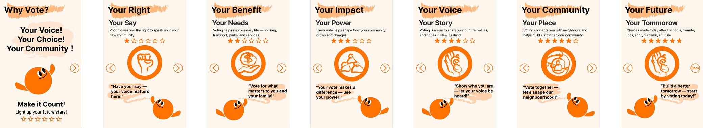
The news style made the information feel reliable. It was less effective at creating emotional relevance for users who were not already interested.
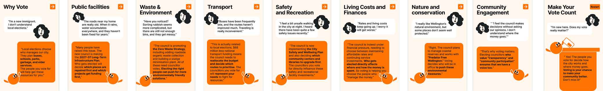
The neighbour style connected voting with everyday conversation. The final direction kept this human tone, then added data and direct calls to action.
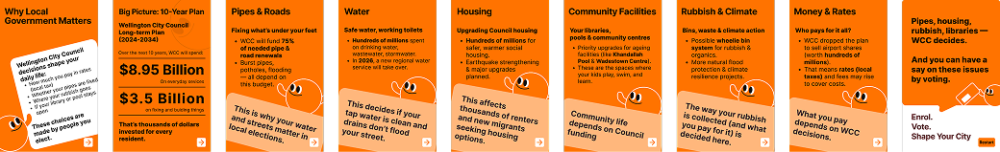
The final tone combined short visual storytelling, credible data and a clear CTA. Social cards were broken into smaller chapters, and a QR pathway was added to move users toward the website.
Final Design Decisions
Each final touchpoint carries a different part of the journey. The cards create the first spark. The brochure supports family and community learning. The website reduces effort when users are ready to check details.
Social Media Swipe Cards
The card sequence uses a familiar public facility as an everyday anchor, then reveals how local decisions connect to lived experience. The final card uses a QR code to move users from attention to action.
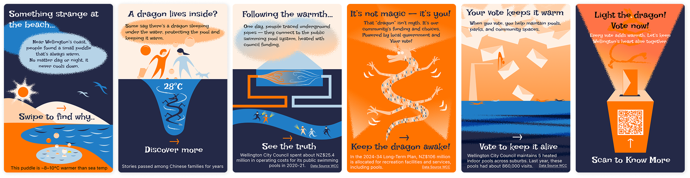
Folded Brochure
The brochure gives the kit a physical support point for households, public offices and community settings. It keeps the tone educational and uses plain language for quick scanning.
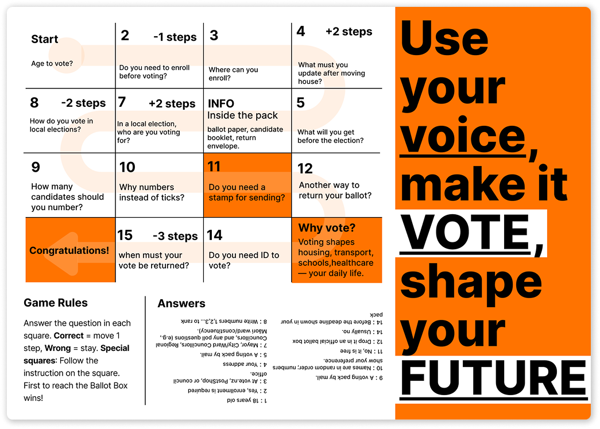
Responsive Website
The website uses a shallow IA around About Voting, How to Vote and Support. This structure avoids internal government logic and matches what users need to understand, decide and act.
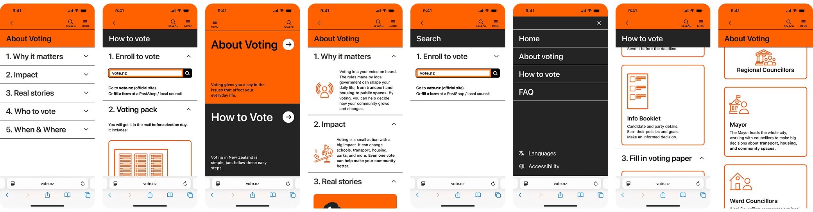
Visual System
The visual system uses the original orange as the main action colour and blue as the secondary support colour. Orange carries urgency and visibility. Blue supports website and information cues where the page needs a calmer system tone.
Typography
The type system supports short headlines, compact captions and clear reading order across social cards, brochure and website screens.
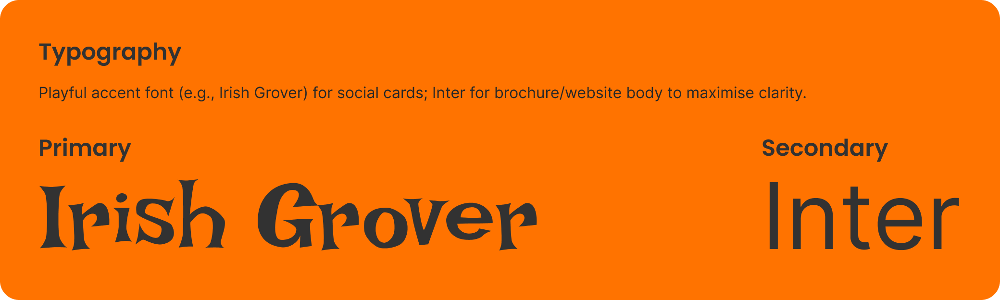
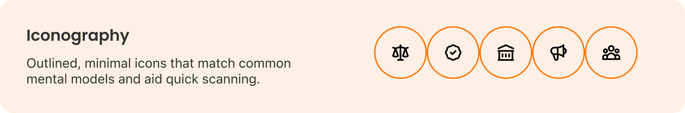
Icon System
The icons translate repeated actions and information categories into quick visual cues, reducing reading load across the kit.
Illustration and Accessibility
Social illustrations use solid blocks for stronger recognition, while other materials use lighter line support. Accessibility checks kept contrast and hierarchy legible.
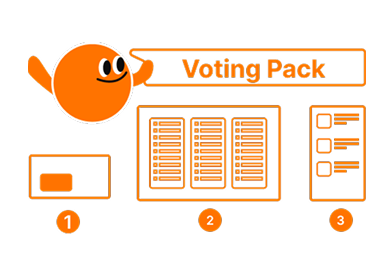
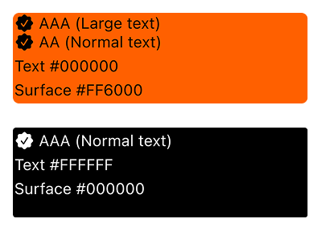
Retrospective
The project connected civic information, visual storytelling and service access into one practical starter kit.
The research sample was narrow, and cultural variation needs deeper testing before real public rollout.
The next step would be wider cultural testing, A/B testing, tree testing and post-launch engagement review.
Primary recipeR19 · Quick Motivation PromptsAgency × Affect × Medium
This project uses R19 because the core challenge was not only to explain voting information. The work needed to trigger attention, build motivation and help people take a small next step through the right communication medium.
Related Projects
 Service SystemsAccessibility Support HubA support pathway case focused on clearer access to court assistance.
Service SystemsAccessibility Support HubA support pathway case focused on clearer access to court assistance. Digital SystemsNew World Design SystemA design system case focused on reusable UI structure.
Digital SystemsNew World Design SystemA design system case focused on reusable UI structure. Service SystemsVictim HubA public sector service improvement case.
Service SystemsVictim HubA public sector service improvement case. Digital SystemsWho’s Singing OuTūīside?A public communication case using data, ecology and visual storytelling.
Digital SystemsWho’s Singing OuTūīside?A public communication case using data, ecology and visual storytelling.